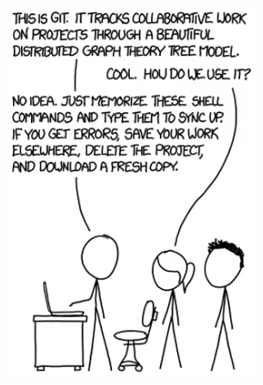

Git FAQs ❔¶
This document should help you to avoid the situation parodied in the joke below. It mainly focuses on the git command line at the time of writing. Feel free to add FAQs or amend the existing ones. Basic git a and command line skills are assumed.

General¶
#1: I'm not sure what is going to be committed. How do I view my local changes?
Show unstaged local changes
git diff [file]
Show staged local changes
git diff --staged [file]
git status -v [file]
#2: I'm not sure what will change when I pull changes from remote. Is it possible to see remote changes before issuing git pull ?
git pull is a combined action of git fetch and git merge. So fetch the changes first without merging. Then check the remote commit log or actual changes ( -p option )
git fetch && git log origin/master ^master [-p]
If you just want to see what files will be modified if you do a git pull, do this - @{u} means upstream
git fetch && git diff HEAD @{u} --name-only
If you want to see ALL different files between your current version and the incoming version, including uncommited local modifications, type this
git fetch && git diff @{u} --name-only
#3 Can I view a file from specific commit without reverting the history to that commit?
To display whole file (e.g. `Jenkinsfile) from specific commit
git show f76789f514c1db57c82d1a932cd7c5362b31a397:Jenkinsfile
To display only diff from current state in local tree
git diff f76789f514c1db57c82d1a932cd7c5362b31a397 Jenkinsfile
Branching¶
#1: How do I view a file from different branch (without checking that branch out)? I can't checkout without stashing, my files would be overwritten by the checkout
Use the following command to view file Dockerfile from branch dev directly from a different branch
git show dev:./Dockerfile
#2 I want to switch between branches quickly - is that possible?
You can switch between current and previous branch using - option to git checkout
git checkout -
#3 How do I remove stale branches from my local machine?
To remove stale branches that were deleted from remote from your local tree
git fetch -p
#4 Can I generate a changelog based on commits from my feature (FTR) branch?
To create or update a CHANGELOG.md file from your recent commits you can use the bash oneliner below. It compares the commits from your FTR/SR2 branch with arbitrary branch without the commits. Run it from your FTR/SR2 branch before doing merge or rebase. You can pick any local/remote branch to compare. The example below uses local copy of Example1.3 branch. To use e.g. master branch on your remote, replace ^Example1.3 with ^remotes/origin/master. The oneliner will produce a CHANGELOG.md file, which can be used in the repo or manually edited to suit your needs.
{ echo -e "\n### [`git rev-parse --abbrev-ref HEAD`] - `date +'%Y-%m-%d'`"; git log --pretty="- %s" HEAD ^Example1.3 ; } >> CHANGELOG.md
#5 I want to compare commits in 2 different branches. How do I do that?
Let's take master and Example1.3 branches as an example. To get commits which are in Example1.3 only (thus AHEAD of master):
git log master..Example1.3
To get commits which are in master only and not in Example1.3 (thus behind master)
git log Example1.3..master
There’s also a third command which will filter out the common commits and show the difference – note 3 dots instead of 2:
git log master…Example1.3
Undoing¶
#1: I don't like my local changes. I didn't commit yet. How do I remove the changes?
Discard local (uncommitted) changes to a file - reset to previous state
git checkout -- <file>
Discard all local changes to all files permanently
git reset --hard
#2: I don't like my local changes, but I committed already. How do I remove those commits/changes?
Reset local changes (remove unwanted commits) but leave files intact
git reset <last good SHA>
Reset local changes (remove unwanted commits) and remove changes in files too
git reset --hard <last good SHA>
You can always use ~N shortcut, where N represents number of commits to roll back. E.g., to reset local changes (remove unwanted commits) and remove changes in files 3 commits back, do
git reset --hard HEAD~3
Note on using --hard
Note the --hard switch to git reset can be dangerous. You can easily lose changes that haven't been commited yet. Use with caution.
#3: I made a typo in my commit message. How do I change it?
Amend last commit's commit message
git commit --amend
#4: I noticed I forgot to add a change to the last commit. Is it possible to add it without creating a new commit?
After adding the change, amend the last commit (optionally without changing the commit message, note the --no-edit option)
git add changed_file
git commit --amend --no-edit
Note on amending already pushed commits
You can amend a commit even if it was pushed to remote already. This is not recommended, as somebody could have pulled the commit from remote. Anyway, if you're sure nobody pulled the commit from remote, you can force push the amended commit
git push --force
#5: My history looks bad - there are too many unnecessary commits (e.g. from testing). Can I clear the history and start from scratch?
Sure, but do this only on personal projects with no collaborators. Always have a backup ready, this process can't be reverted
Remove history & config of the repository. Assuming CWD is the repository root
cat .git/config # note <github-uri>
rm -rf .git
Reconstruct the Git repo with only the current content
git init
git add .
git commit -m "Initial commit"
Push to github
git remote add origin <github-uri>
git push -u --force origin master
#6 Somebody deleted my files accidentally! How do I find the commit where it happened?
Find commit which deleted a file (importsles directory in this case)
git log --diff-filter=D -- "*importsles*"
Restore the deleted directory and it's content
git checkout afd2c9e882b3a713530d6d4432c3bb2821ad8ebf^ -- docs/Example/img/importsles/
#7 I staged some file accidentally. How to unstage?
Restore what is staged to previous state (unstage)
git restore --staged docs/Example/img/importsles/Example1.png
Authoring¶
#1 I'm on a remote machine and want to commit & push to remote with my github identity. How to setup the shell environment?
Set user name and email address
git config --global user.name "John Doe"
git config --global user.email john.doe@example.com
If you commited already and got a warning message about your identity
git commit --amend --reset-author
#2 While working on remote, I want to customize the shell prompt so it looks like the local git bash I run on Windows
Run the following commands in bash shell. Requires Internet access, setup proxy if necessary
cd ~
wget https://raw.githubusercontent.com/git/git/master/contrib/completion/git-completion.bash
wget https://raw.githubusercontent.com/git/git/master/contrib/completion/git-prompt.sh
Add to ~/.bashrc
. ~/git-completion.bash
. ~/git-prompt.sh
export GIT_PS1_SHOWDIRTYSTATE=1
export PS1='\[\033[32m\]\u@\h \[\033[33m\]\w\[\033[36m\]$(__git_ps1 " (%s)")\n\[\033[0m\]\$ '
Patching¶
#1 I updated Documentation repository (e.g. Documentation-1.5) and want to update other Documentation-1.X repositories without doing the same work multiple times. How do I do that?
You can patch similar repositories using the following procedure
cd Documentation-1.5
Create a patch from last commit. Following command creates a patch from the last commit. Note you can create patches for multiple commits at once by incrementing the -1 option
git format-patch -1
Change working directory to the destination repository, e.g. Documentation-1.4
cd ../Documentation-1.4
Check if the patch can be applied
git apply --check ../Documentation-1.5/0001-Example.md.patch
Apply the patch
git am < ../Documentation-1.5/0001-Example.md.patch
#2 Can I create a patch from specific commit?
To create a patch from specific commit add the commit hash to the command
git format-patch -n1 718c2f1c7e2b6792d7122191b7881433189ce781
#3 Can I create a patch just for a specific file?
To create a patch from specific commit for one particular file only issue the command below. Beware other files changed in that commit won't be updated by the patch
git format-patch -n1 2fc7caaca230012fc2d3f1cc3a9aa2ad177f3e82 docs/Example/Example.md
#4 I didn't commit my changes yet. Can I create a patch from a modified file?
To create a patch from modified files issue the command below. If you staged the changes already, use --staged option to git diff
git diff > Example.yml.patch
To apply the patch change your working directory to whatever repo you want to patch and issue the following command
git apply Example.yml.patch
Stashes¶
#1 I want to checkout to a different branch but git says my changes would be overwritten by the checkout. How to deal with this situation?
Use stashes in this case. Stash your changes on tracked files
git stash
Now you can switch to new branch
git checkout -b my-new-branch
Apply the changes stored in stash in the new branch if desired. Note the stash number can be obtained using git stash list
git stash apply stash@{0}
Tags¶
Can I create a release on github from the command line?
Yes, a release on github is created when a tag is pushed to remote. Create a tag first using
git tag v1.0.1
Push the tag to remote (github). This will push the tag and create a release on github. Note tags are not pushed by default
git push --tags
To show which commit your tag points to, use
git log v1.0.1
To delete the release from github, use
git push --delete origin v1.0.1